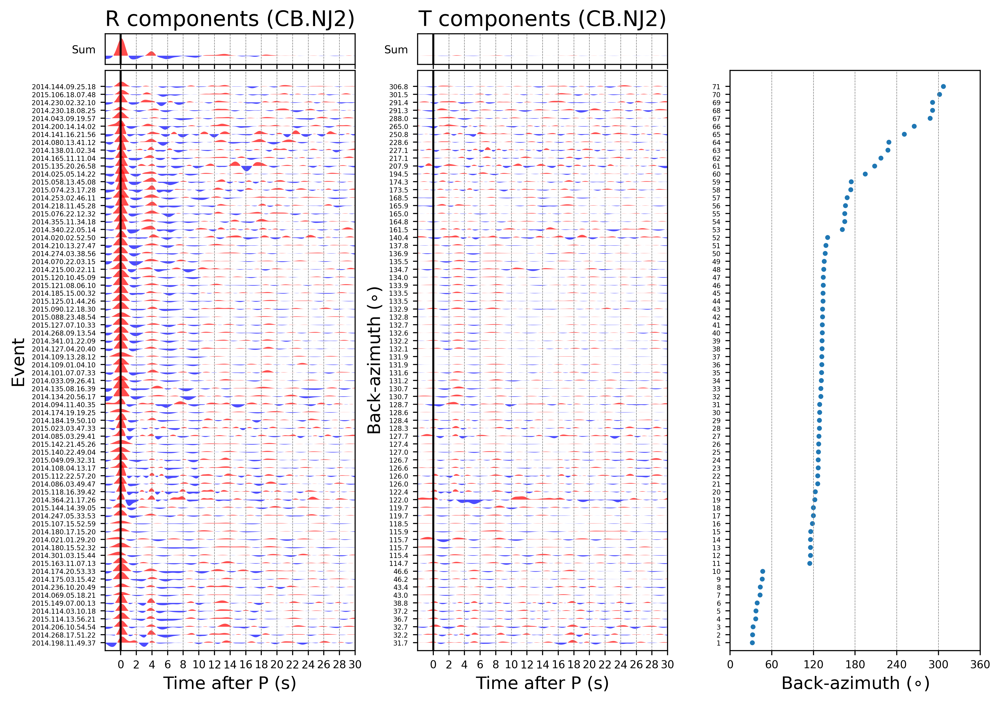

Examples# RF calculation & H-k stacking  CCP stacking along a profile 3D CCP stacking & extracting D410 and D660 depth PRFs calculation and H-k stacking Calculate PRFs of the station CB.NJ2 Estimate the Moho depth and the crustal Vp/Vs using the H-k stacking method Batch calculation and CCP stacking Calculate PRFs of a seismic array in batch CCP stacking along a linear seismic array 3-D CCP stacking for mantle transition zone structure under the Tibet. Download this example 3-D CCP stacking CCP stacking along a profile with bootstrapping Reference